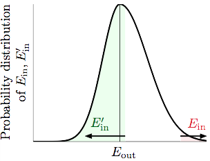

上一篇用成长函数来衡量Hypotheses Set 中有效的方程的数量(Effective Number of Hypotheses)，以取代Hoeffding's Inequality中的大，并用一种间接的方式 --- break point，来寻找的上界，从而避免了直接研究的成长函数的困难。
根据之前得到的式子，我们知道如果一个存在break point，我们就有办法保证学出来的东西能够“举一反三”(good generalization)。一般来说break point越大的，其复杂度也更高，我们可以使用vc dimension来描述一个的复杂程度，这个vc dimension来自Vladimir Vapnik与Alexey Chervonenkis所提出的VC Theory。
根据定义，一个的vc dimension(记为)，是这个最多能够shatter掉的点的数量 (the largest value of N for which )，如果不管多少个点都能够shatter他们，则。不难看出与break point k的关系，有，因此我们用这个来描述成长函数的上界：
上式右边(RHS)事实上是最高项为的多项式，利用数学归纳法可得：
上一篇的末尾我们设想利用有限的来替换无限的大，得到遇到Bad Sample的概率上界：
其中是中所有有效的方程(Effective Hypotheses)遇到Bad Sample的联合概率，即中存在一个方程遇上bad sample，则说遇上bad sample。用更加精准的数学符号来表示上面的不等式：
注： - 中存在()满足()...的
但事实上上面的不等式是不严谨的，为什么呢？描述的是作用于数据量为的资料，有效的方程数，因此当中每一个作用于都能算出一个来，一共能有个不同的，是一个有限的数。但在out of sample的世界里(总体)，往往存在无限多个点，平面中任意一条直线，随便转一转动一动，就能产生一个不同的来。的可能取值是有限个的，而的可能取值是无限的，无法直接套用union bound，我们得先把上面那个无限多种可能的换掉。那么如何把变成有限个呢？
假设我们能从总体当中再获得一份笔的验证资料(verification set)，对于任何一个我们可以算出它作用于上的，由于也是总体的一个样本，因此如果和离很远，有非常大的可能和也会离得比较远。

事实上当N很大的时候，和可以看做服从以为中心的近似正态分布(Gaussian)，如上图。这个事件取决于，如果，则如果我们从总体中再抽一份出来，有50%左右的可能性会发生，还有大约50%的可能。
因此，我们可以得到的一个大概的上界可以是，以此为启发去寻找二者之间的关系。
引理：
上面的不等式是从何而来的呢？我们先从RHS出发：
上式第二行的不等号可以由得到，第三、四行则是贝叶斯公式，联合概率等于先验概率与条件概率之积。
下面来看看不等式的最后一项。对于一个固定的data set 来说，我们任选一个使得，注意到这个只依赖于而不依赖于噢，对于来说可以认为这个 is forced to pick out。
由于是对于来说满足的任意一个hypothesis，因此可以把式子中的上确界(sup)先去掉。
这里就要稍微出动一下前人的智慧了：
为了直观一点就不写了。经过各种去掉绝对值符号又加上绝对值符号的运算，可以发现LHS的两个不等式是RHS那个不等式的充分非必要条件。而LHS第二个不等式是已知的，对于必成立的。因此我们拿LHS这个充分非必要条件去替换RHS这个不等式，继续前面的不等式：
最后一个不等号动用了Hoeffding Inequality：
之前说过对于来说， is forced to pick out，因此。接着把替换为，就成了。则我们可以得到引理中的不等式。
对于，一个比较合理的要求是，譬如我们有400笔资料，想要和相差不超过0.1。注意到这只是一个bound，只要要求不太过分，也不能太宽松即可，适当的宽松一点是OK的。当然这里也是想跟之前所说的 "的一个大概的上界可以是" 当中的2倍有所结合。
所以就有。带回引理，可得：
这样一来我们就把无限多种的换成了有限多种的，因为与的大小相等，都为，因此我们手中一共有笔数据，这样作用于最多能产生种dichotomies。此时我们针对上面的不等式，就又可以使用union bound了。(关于union bound，可以参考上一篇VC Dimension, Part I)
前面的动作相当于先从总体中抽出笔数据，把这笔数据当成一个比较小的bin，然后在这个bin中抽取笔作为，剩下的笔作为，和之间是没有交集的。在我们想象出来的这个small bin当中，整个bin的错误率为，又因为：
所以用RHS替换LHS之后，前面不等式就又可以使用Hoeffding inequality了：
这上面千辛万苦得出来的这个bound就叫做Vapnik-Chervonenkis (VC) bound：